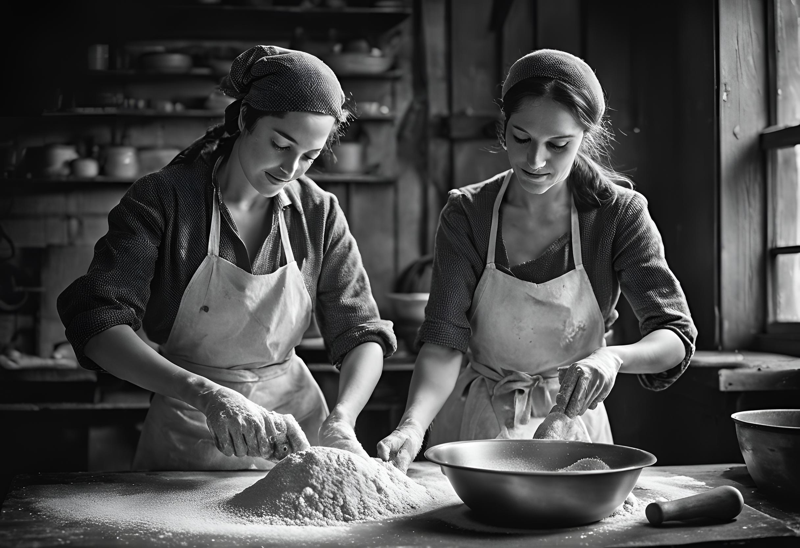

Piekarnia "U Julek" to miejscu, gdzie tradycja spotyka się z pasją do pieczenia! Nasza piekarnia to nie tylko miejsce, gdzie można kupić chleb i ciasta — to prawdziwa opowieść o rodzinnych recepturach, które są przekazywane z pokolenia na pokolenie.
Od wielu lat z dumą kontynuujemy tradycje piekarskie, które rozpoczęli nasi przodkowie. Każdy wypiek, który wychodzi z naszego pieca, jest wynikiem nie tylko doskonałej receptury, ale również miłości do sztuki pieczenia. Dzięki wykorzystaniu domowych przepisów oraz starannie dobranych składników, nasze produkty charakteryzują się wyjątkowym smakiem i jakością.
W "U Julek" wierzymy, że chleb to coś więcej niż tylko jedzenie. To symbol domu, ciepła i wspólnoty. Codziennie pracujemy z dbałością o najdrobniejsze szczegóły, aby dostarczać naszym klientom pieczywo, które smakuje jak z kuchni babci.
Zapraszamy do naszej piekarni, aby poczuć zapach świeżo wypiekanego chleba i zasmakować w naszych wyjątkowych specjałach. Jesteśmy tutaj, aby podzielić się z Wami naszą pasją i tradycją!

Nasze wyroby pochodzą z naturalnych składników...
W Piekarni "U Julek" dbamy o to, aby każdy składnik naszych wypieków był najwyższej jakości i pochodził z naturalnych źródeł. Wybieramy tylko najlepsze mąki, świeże jaja, naturalne drożdże i lokalne owoce, aby zapewnić naszym klientom zdrowe i smaczne produkty. Wierzymy, że prawdziwy smak chleba i ciast pochodzi z natury, dlatego unikanie sztucznych dodatków to nasza dewiza.
Tradycja piekarska od pokoleń...
Historia naszej piekarni to opowieść o rodzinnych recepturach, które są przekazywane z pokolenia na pokolenie. Od wielu lat z dumą kontynuujemy tradycje piekarskie zapoczątkowane przez naszych przodków. Każdy bochenek chleba i każde ciasto to wynik starannie pielęgnowanych tajemniczych przepisów, które pozwalają nam tworzyć wypieki o niepowtarzalnym smaku i aromacie.
Pieczywo jak z kuchni babci...
W "U Julek" wierzymy, że chleb to coś więcej niż tylko jedzenie – to symbol domu, ciepła i wspólnoty. Nasze wypieki są przygotowywane z taką samą starannością i miłością, jaką wkładały nasze babcie w pieczenie chleba dla swoich rodzin. Codziennie troszczymy się o najdrobniejsze szczegóły, aby dostarczać naszym klientom pieczywo, które smakuje jak domowe.
Piekarnia w sercu miasta...
Piekarnia "U Julek" to trzy wyjątkowe lokalizacje w Krakowie – na Starym Mieście, Kazimierzu i w Nowej Hucie. Nasza pierwsza piekarnia została założona na Starym Mieście, co czyni ją sercem naszej sieci i miejscem, skąd wszystko się zaczęło. Każdy z naszych lokali oferuje niepowtarzalną atmosferę i zapach świeżo wypiekanego chleba, który przyciąga mieszkańców i turystów. Nasze piekarnie to miejsca, gdzie można zatrzymać się na chwilę, poczuć magię tradycji i zasmakować w wyjątkowych specjałach przygotowywanych z pasją.